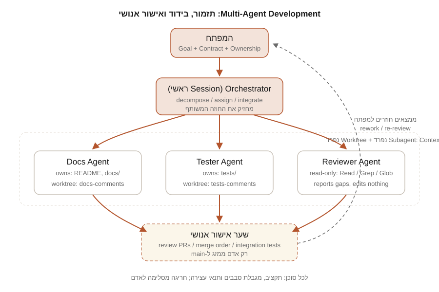

חלק ח | פרק 38
Multi-Agent Development
כשמשימה גדולה מתפרקת ליחידות עצמאיות, אפשר להריץ כמה סוכני Claude Code במקביל: אחד על ה-Backend, אחד על ה-Frontend, אחד על הבדיקות ואחד על התיעוד. זה מהיר, וזה גם הדרך הקלה ביותר ליצור בלגן: שני סוכנים שעורכים אותו קובץ, חוזה API שכל אחד מפרש אחרת, ותקציב שנשרף בלי שאיש שם לב. בפרק הזה נלמד מתי מקבול משתלם ומתי לא, איך מפרקים משימה, איך קובעים חוזים משותפים ובעלות על קבצים, איך Git Worktrees מבודדים כל סוכן, אילו מנגנונים Claude Code מספק (Subagents, /batch, /fork, /background, claude -p, ו-Agent Teams הניסיוני), ואיך שולטים בעלות ובתנאי העצירה. הכול מודגם על Feature התגובות של TaskFlow.
מהו Multi-Agent Development ואיזו בעיה הוא פותר
Multi-Agent Development הוא פיצול של עבודת פיתוח בין כמה מופעים של Claude שרצים במקביל, כאשר כל אחד מחזיק Context Window משלו, אחראי על חלק מוגדר, ותוצריו מתמזגים בסוף לפי תוכנית. הבעיה שהוא פותר היא כפולה: זמן קיר (ארבע יחידות עבודה עצמאיות שרצות במקביל מסתיימות מהר יותר מארבע שרצות בטור), ו-Context (סוכן שאחראי רק על בדיקות לא צריך לשאת בזיכרונו את כל ה-Frontend). התיעוד הרשמי מציין את זה כעיקרון: ביצועים יורדים ככל שה-Context מתמלא, ולכן פיצול לסוכנים ממוקדים משפר איכות, לא רק מהירות.
המחיר הוא תיאום. כל סוכן נוסף מכפיל את צריכת ה-Tokens, מוסיף נקודת כשל, ודורש שמישהו (אתם או סוכן מתזמר) יגדיר מראש מי עושה מה ומה נחשב סיום. הפרק הזה עוסק בעיקר בתיאום הזה.
מתי מקבול עוזר ומתי הוא מזיק
| מקבול עוזר כאשר | מקבול מזיק כאשר |
|---|---|
| היחידות עצמאיות: כל אחת יכולה להסתיים בלי לחכות לאחרת | היחידות תלויות בטור: ב' לא יכולה להתחיל לפני שא' סיימה |
| יש חוזה ברור בין היחידות (סכמה, טיפוסים, ממשק) שנקבע מראש | החוזה "יתברר תוך כדי", וכל סוכן ממציא גרסה משלו |
| כל סוכן עובד על קבצים שונים, ויש מטריצת בעלות | שני סוכנים או יותר צריכים לערוך אותו קובץ |
| יש מבחן אינטגרציה שמוכיח שהחלקים מתחברים | אין דרך אוטומטית לדעת שהחיבור עובד |
| המשימה גדולה מספיק שהתקורה של תיאום משתלמת | המשימה קטנה: סוכן אחד יסיים לפני שתסיימו לכתוב את מטריצת הבעלות |
| סקירה או מחקר: זוויות שונות על אותו קוד (אבטחה, ביצועים, בדיקות) | עריכת אותם קבצים משלוש זוויות שונות |
התיעוד הרשמי של Agent Teams מנסח את זה בקצרה: לעבודה סדרתית, לעריכות באותם קבצים או לעבודה עם תלויות רבות, Session יחיד או Subagents יעילים יותר. אם אינכם בטוחים, התחילו במשימות שאינן כותבות קוד: סקירה, מחקר, חקירת Bug. שם המקבול מראה את ערכו בלי סיכוני מיזוג.
הפרק מניח היכרות עם Subagents (פרק 25), עם Git ו-Pull Requests (פרק 13), עם הרצה לא-אינטראקטיבית (פרק 33) ועם סקירת תוכנית לפני יישום (פרק 37). הדוגמאות רצות על TaskFlow בתוך Repository של Git.
איך זה עובד מושגית

ארבעה רכיבים חוזרים בכל תצורה, בלי קשר למנגנון הטכני שבחרתם:
- מתזמר (Orchestrator). אתם, או ה-Session הראשי שלכם. הוא מחזיק את התמונה הכוללת: המטרה, החוזה, מטריצת הבעלות וסדר האינטגרציה. הוא לא כותב קוד של יחידה; הוא מפרק, מקצה, אוסף וממזג.
- סוכנים מבודדים. כל אחד עם Context Window משלו, קבוצת קבצים משלו, ובאופן אידיאלי Worktree משלו, כך שעריכה אצל אחד לא נראית אצל אחר עד למיזוג.
- חוזה משותף. קובץ (או כמה) שמוגדר לפני שהעבודה מתפצלת ושכל הסוכנים קוראים: סכמת API, טיפוסים, שמות Endpoints, קודי שגיאה.
- שער אישור אנושי. המיזוג ל-
mainנעשה על ידי אדם, בסדר שנקבע מראש, אחרי בדיקות אינטגרציה. הסוכנים מציעים Pull Requests; הם לא ממזגים.
שלב 1: פירוק המשימה
פירוק טוב מייצר יחידות שכל אחת מהן: (א) ניתנת לתיאור במשפט; (ב) נוגעת בקבוצת קבצים שאינה חופפת ליחידה אחרת; (ג) יש לה בדיקה שמוכיחה סיום. אפשר לתת ל-Claude לעשות את הפירוק הראשוני ב-Plan Mode:
We are adding a "comments on tasks" feature to TaskFlow.
Decompose it into independent work units suitable for parallel agents.
For each unit: name, one-sentence goal, files it will create or edit
(exact paths), files it must NOT touch, the test that proves it is done,
and which other unit it depends on (or "none"). Then propose the shared
contract that must exist before any unit starts. Do not implement.אם התוצאה מכילה יחידות שחולקות קובץ, זה סימן שהפירוק אינו נכון עדיין: או שמאחדים את היחידות, או שמוציאים את הקובץ המשותף לשלב החוזה שנעשה מראש. הכלל של התיעוד הרשמי פשוט: "Two teammates editing the same file leads to overwrites. Break the work so each teammate owns a different set of files."
שלב 2: חוזים משותפים קודם
לפני שמפצלים, מבצעים Commit לחוזה. ב-TaskFlow, חוזה לפיצ'ר התגובות הוא קובץ אחד קריא לאדם ולמודל, ועוד שני קבצי טיפוסים ריקים-כמעט שמקבעים שמות:
# Contract: Task comments (v1)
## Endpoints
- GET /tasks/{task_id}/comments -> 200 list[Comment]
- POST /tasks/{task_id}/comments -> 201 Comment
- DELETE /tasks/{task_id}/comments/{id} -> 204
- 404 when task or comment does not exist; 422 on invalid body
## Comment
- id: int
- task_id: int
- body: str (1..2000 chars)
- created_at: str (ISO 8601, UTC)
## Ownership of this file
- Owned by the orchestrator (human). Agents may propose changes via PR
comments only. Any change bumps "v1" and notifies all agents.export interface Comment {
id: number;
task_id: number;
body: string;
created_at: string;
}אותו דבר ב-Backend: מודל Comment ו-CommentCreate ב-models.py נכנסים בשלב החוזה, לפני שסוכן ה-Backend מתחיל לכתוב Router. כך סוכן הבדיקות יכול לכתוב בדיקות מול טיפוסים קיימים, וסוכן ה-Frontend יכול לבנות רכיב מול Comment בלי לחכות. החוזה הוא הקובץ היחיד ש"שייך לכולם", ולכן הוא היחיד שאסור לאף סוכן לערוך.
שלב 3: מטריצת בעלות ו-Git Worktrees
מטריצת בעלות
מטריצת בעלות היא טבלה קצרה שנכנסת ל-Prompt של כל סוכן, ומצוינת בה גם רשימת ה"אסור לגעת". דוגמה מלאה בסעיף הדוגמה המציאותית. העיקרון: כל נתיב מופיע בשורה אחת בלבד, ואין נתיב שמופיע בשתי שורות.
Worktree לכל סוכן
Git Worktree הוא תיקיית עבודה נפרדת עם Branch משלה, שחולקת את ההיסטוריה עם ה-Repository הראשי. זה המנגנון שהופך את "בעלות על קבצים" מהסכמה לאכיפה: סוכן שרץ ב-Worktree משלו פשוט לא רואה את העריכות של האחרים עד למיזוג. Claude Code תומך בזה ישירות:
הסבר: הדגל --worktree (או -w) עם שם יוצר Worktree תחת .claude/worktrees/<name>/ בשורש ה-Repository, על Branch חדש בשם worktree-<name>, ומפעיל שם את Claude. הרצה נוספת עם שם אחר ב-Terminal אחר פותחת Session מבודד שני. ללא שם, Claude מגריל שם. הפעלה אינטראקטיבית דורשת שכבר אישרתם Trust לתיקייה (הריצו claude פעם אחת בשורש). כשיוצאים מ-Session כזה, Claude בודק אם נשארה עבודה לא ממוזגת ושואל אם לשמור או למחוק את ה-Worktree.
שלוש הגדרות שכדאי להכיר:
.worktreeincludeבשורש הפרויקט: רשימת קבצים שאינם ב-Git (כמו.env) שיועתקו אוטומטית לכל Worktree חדש. בלעדיו, ה-Worktree הוא Checkout נקי ללא סודות מקומיים.worktree.baseRefב-settings.json: ברירת המחדל"fresh"מסתעפת מ-Branch ברירת המחדל של ה-Remote;"head"מסתעף מה-HEADהמקומי הנוכחי (שימושי כשהחוזה עדיין לא נדחף).- הוסיפו
.claude/worktrees/ל-.gitignore, כפי שהתיעוד ממליץ.
אפשר גם ידנית, למי שמעדיף שליטה מלאה או Branch קיים:
ולבסוף, Subagents יכולים לקבל Worktree משלהם באמצעות השדה isolation: worktree בהגדרה (ראו בהמשך). בכל המקרים, בזמן שהסוכן ב-Worktree, Claude Code חוסם עריכות ופקודות שמכוונות ל-Checkout הראשי; זו אכיפה, לא בקשה.
שלב 4: סוכני תפקיד
מלבד סוכני "יחידה" שכותבים קוד, כדאי להגדיר סוכני תפקיד רוחביים. שלושה שימושיים במיוחד:
- Review agent. קריאה-בלבד, Context טרי, בודק כל PR מול החוזה ומדווח פערים. במדריך:
architecture-reviewerו-security-reviewer(פרק 37). - Test agent. בעלים של
tests/בלבד. כותב בדיקות מול החוזה, לא מול המימוש, ולכן יכול לעבוד במקביל לסוכן ה-Backend. במדריך:test-specialist. - Architecture agent. מבקר את תוכנית הפירוק לפני הפיצול ואת סדר האינטגרציה אחריו. גם הוא קריאה-בלבד.
הגדרת סוכן יחידה עם בידוד, מגבלת סבבים ומודל זול יותר נראית כך:
---
name: backend-implementer
description: Implements a single backend work unit against docs/contracts. Use only when given an explicit unit and file ownership list.
tools: Read, Grep, Glob, Edit, Write, Bash
model: sonnet
isolation: worktree
maxTurns: 40
---
You implement exactly one work unit in TaskFlow's backend.
Read docs/contracts/*.md first and treat it as immutable.
Edit only the files listed under "owns" in your task. If you believe
another file must change, stop and report; do not edit it.
Run `cd backend && pytest -q` before reporting done.
Report: files changed, tests run, anything blocked.השדות מאומתים מול התיעוד: tools מגביל כלים; model מקבל כינוי כמו sonnet, opus, haiku או inherit; isolation: worktree מריץ ב-Worktree זמני שנמחק אוטומטית אם לא נעשו שינויים; maxTurns מגביל סבבים. שימו לב שהתיאור מדגיש "only when given an explicit unit", כדי שהסוכן לא ייבחר אוטומטית למשימות כלליות.
שלב 5: אסטרטגיית אינטגרציה
אינטגרציה היא החלק שרוב הצוותים שוכחים לתכנן, ואז מגלים ביום האחרון. חמישה כללים:
- מי ממזג: אדם. הסוכנים פותחים PRs קטנים; המתזמר האנושי סוקר וממזג. אין מיזוג אוטומטי ל-
main. - באיזה סדר: לפי גרף התלויות. קודם החוזה (כבר ב-
main), אחר כך ה-Backend (כי הבדיקות וה-Frontend נבדקים מולו), אחר כך הבדיקות, אחר כך ה-Frontend, ולבסוף התיעוד. אם סוכן הבדיקות סיים ראשון, ה-PR שלו ממתין. - PRs קטנים. יחידה אחת ל-PR. PR של סוכן שנוגע ב-30 קבצים הוא סימן שהיחידה גדולה מדי.
- משמעת Rebase. לפני שסוכן מסמן "מוכן", הוא (או אתם) מבצעים
git rebase mainב-Worktree שלו ומריצים שוב את הבדיקות. כך ההתנגשויות מתגלות אצל הבעלים ולא אצל המתזמר. - מבחן אינטגרציה. בדיקה אחת לפחות שעוברת רק כשכל החלקים מחוברים: למשל, בדיקת API שיוצרת משימה, מוסיפה תגובה ומוחקת אותה, פלוס
npm run typecheckב-Frontend מול הטיפוסים הסופיים.
המנגנונים ב-Claude Code
ישנן כמה דרכים טכניות להריץ כמה סוכנים. הן שונות ברמת האוטומציה, בבידוד ובבשלות:
| מנגנון | מה זה | בידוד קבצים | תקשורת בין סוכנים | סטטוס |
|---|---|---|---|---|
| Subagents (מקבילים, ברקע) | סוכני עזר בתוך Session אחד, מחזירים תוצאה למי שקרא להם | אופציונלי: isolation: worktree | רק חזרה לשיחה הראשית | Stable |
/batch | Skill מובנה: מפרק שינוי גדול ל-5 עד 30 יחידות, סוכן רקע ב-Worktree לכל יחידה, PR לכל יחידה | כן, Worktree לכל יחידה | אין; המתזמר הוא ה-Session שלכם | Stable |
/fork, /background, claude --bg | Sessions מלאים שרצים ברקע ללא Terminal, מנוהלים ב-claude agents | כן, ב-Repository של Git נכנסים ל-Worktree לפני עריכה (ניתן לכיבוי) | אין ישירה; אתם המתאמים | Research Preview (Agent view) |
claude -p מסקריפט | לולאת Shell שמריצה מופע לכל יחידה | מה שתגדירו: Worktree ידני או -p --worktree | אין; הסקריפט הוא המתזמר | Stable |
| Agent Teams | מנהיג ו-Teammates עם רשימת משימות משותפת ותיבות דואר | לא מובנה; יש להקצות קבצים ב-Prompt | כן, ישירה בין Teammates | Experimental |
Subagents: מקבילים, ברקע, מקוננים, ניתנים לחידוש
הבסיס נלמד ב-פרק 25; כאן העובדות הרלוונטיות למקבול, כפי שמופיעות בתיעוד:
- מקביליות. Claude יכול להריץ עד 20 Subagents במקביל כברירת מחדל; מעבר לכך תופיע השגיאה
Concurrent subagent limit reached. משנים עם משתנה הסביבהCLAUDE_CODE_MAX_CONCURRENT_SUBAGENTS. בקשה כמוResearch the auth, database and API modules in parallel using separate subagentsמפעילה כמה במקביל. - רקע. Subagent שרץ ברקע אינו חוסם את השיחה.
Ctrl+Bמעביר משימה שרצה בחזית לרקע; השדהbackground: trueבהגדרה משאיר סוכן ברקע תמיד. בקשות הרשאה של סוכן רקע מופיעות בשיחה הראשית עם שמו. - קינון. Subagents יכולים להפעיל Subagents משלהם עד עומק שלוש שכבות מתחת לשיחה הראשית (
CLAUDE_CODE_MAX_SUBAGENT_SPAWN_DEPTH; הערך1מבטל קינון). כדי למנוע מסוכן ספציפי להפעיל אחרים, פשוט אל תכללוAgentב-toolsשלו. - חידוש. Claude יכול להמשיך Subagent שהסתיים באמצעות
SendMessage, בשם שניתן לו, עם היסטוריית השיחה המלאה שלו. תמלילי Subagents נשמרים תחת~/.claude/projects/<project>/<sessionId>/subagents/. - ניטור.
/tasksמציג את כל עבודת הרקע של ה-Session: Subagents רצים, שהסתיימו ושנכשלו. בחירת שורה ולחיצה עלxעוצרת סוכן.
/batch: פירוק אוטומטי ל-Worktrees ו-PRs
/batch <instruction> הוא Skill מובנה שמיועד בדיוק לשינויים רחבים ועצמאיים. לפי התיעוד: הוא חוקר את ה-Codebase, מפרק את העבודה ל-5 עד 30 יחידות עצמאיות ומציג תוכנית; אחרי אישורכם הוא מפעיל Subagent רקע אחד לכל יחידה ב-Worktree מבודד, וכל Subagent מיישם, מריץ בדיקות ופותח Pull Request. נדרש Repository של Git. דוגמה מהתיעוד: /batch migrate src/ from Solid to React. זה כלי מצוין ל-Migration מכני (פרק 35) ופחות מתאים ל-Feature שיחידותיו תלויות זו בזו: /batch מניח עצמאות, ולא ינהל עבורכם סדר אינטגרציה.
/fork, /background ו-claude --bg: Sessions מלאים ברקע
לפעמים אתם רוצים סוכן שהוא Session שלם, לא Subagent: כזה שאפשר להיכנס אליו, לענות לו ולעזוב. שלוש דרכים, כולן מנוהלות בלוח claude agents (מצב Research Preview):
/background [prompt](או/bg): מנתק את ה-Session הנוכחי לרקע ומשחרר את ה-Terminal./fork [prompt]: מעתיק את השיחה הנוכחית ל-Session רקע חדש וממשיך לעבוד כאן. לפי התיעוד, ההעתק מונחה ליצור Worktree משלו לפני שינויי קוד (דורש גרסה 2.1.221 ומעלה). זה שימושי כשהשיחה כבר צברה הקשר יקר ואתם רוצים לפצל ממנה שני כיווני עבודה.claude --bg "prompt"מה-Shell: מפעיל Session רקע חדש ומחזיר מיד. אפשר לשלב--agent <name>ו---name. הדגל אינו משתלב עם-p.
ב-Repository של Git, Sessions רקע נכנסים אוטומטית ל-Worktree תחת .claude/worktrees/ לפני עריכת קבצים; אפשר לבטל עם "worktree": {"bgIsolation": "none"}, אבל אז חוזרים לסיכון של דריסה הדדית. מהלוח: claude agents --json מדפיס רשימה, claude attach <id> נכנס ל-Session, claude stop <id> עוצר. זכרו את ההערה מהתיעוד: עשרה Sessions מקבילים צורכים בערך פי עשרה מכסה.
claude -p מסקריפט: Fan-out מבוקר
הדרך השקופה ביותר, ומי שרוצה שליטה מלאה בעלות ובסדר יבחר בה. הדפוס מהתיעוד ("Fan out across files"): מייצרים רשימת משימות לקובץ, ואז לולאה שמפעילה claude -p לכל אחת:
#!/usr/bin/env bash
set -euo pipefail
# one line per unit: <worktree-name>|<prompt-file>
while IFS='|' read -r name promptfile; do
claude -p "$(cat "$promptfile")" \
--worktree "$name" \
--allowedTools "Read,Grep,Glob,Edit,Write,Bash(cd *),Bash(pytest *),Bash(npm run *),Bash(git add *),Bash(git commit *)" \
--max-turns 40 \
--max-budget-usd 3 \
--output-format json > "reports/$name.json" &
done < units.txt
wait
jq -r '[.total_cost_usd, .result] | @tsv' reports/*.jsonהסבר: -p מריץ ללא ממשק; --worktree עם -p יוצר Worktree בלי דיאלוג Trust (ובלי ניקוי ביציאה; מנקים ידנית עם git worktree remove); --allowedTools מגדיר בדיוק מה מותר, בתחביר כללי ההרשאות; --max-turns ו---max-budget-usd הם תקרות קשיחות שזמינות רק ב--p; --output-format json מחזיר גם total_cost_usd (אומדן צד-לקוח). ה-& וה-wait הם מה שהופך את זה למקבול; ל-CI ראו פרק 33, כולל --bare לריצה דטרמיניסטית. הסקריפט הזה הוא המחשה: התאימו את רשימת הכלים למה שהיחידות שלכם באמת צריכות, ותמיד הריצו קודם על יחידה אחת.
Agent Teams Experimental
Agent Teams הוא המנגנון היחיד שבו הסוכנים מדברים זה עם זה. לפי התיעוד הרשמי, הוא ניסיוני וכבוי כברירת מחדל; מפעילים אותו עם משתנה הסביבה CLAUDE_CODE_EXPERIMENTAL_AGENT_TEAMS=1, למשל ב-settings.json:
{
"env": {
"CLAUDE_CODE_EXPERIMENTAL_AGENT_TEAMS": "1"
}
}מה זה נותן: Session אחד הוא Team Lead; הוא מפעיל Teammates, כל אחד Session עצמאי עם Context Window משלו; יש רשימת משימות משותפת (עם תלויות ונעילת קבצים למניעת מרוץ) ותיבות דואר להודעות ישירות בין חברי הצוות. אפשר להשתמש בהגדרות Subagent קיימות כתפקידי Teammates ("Spawn a teammate using the security-reviewer agent type"), לדרוש אישור תוכנית מהמנהיג לפני שינויים, ולאכוף שערי איכות עם ה-Hooks TeammateIdle, TaskCreated ו-TaskCompleted. תצוגה: teammateMode עם הערכים in-process (ברירת מחדל, בכל Terminal), auto, tmux או iterm2 (חלוניות מפוצלות, דורש tmux או iTerm2); או הדגל --teammate-mode.
המגבלות המתועדות, וכדאי לקרוא אותן לפני שמסתמכים על זה בעבודה אמיתית:
- אין חידוש Session עם Teammates במצב
in-process:/resumeו-/rewindאינם משחזרים אותם. - סטטוס משימות עלול לפגר; Teammates לפעמים לא מסמנים משימה כהושלמה, וזה חוסם תלויות.
- צוות אחד ל-Session; אין צוותים מקוננים (Teammate לא יכול להקים צוות משלו); המנהיג קבוע.
- הרשאות נקבעות בזמן ההפעלה: כל ה-Teammates מתחילים עם מצב ההרשאות של המנהיג. אם המנהיג רץ עם
--dangerously-skip-permissions, כולם רצים כך. - לא נוצרים Teammates במצב
-pאו ב-Agent SDK. - כשהתכונה מופעלת, Subagent ש-Claude נותן לו שם עשוי לרוץ כ-Teammate גם בלי שביקשתם צוות; מכבים עם הערך
0. - העלות גבוהה משמעותית מ-Session יחיד; התיעוד ממליץ להתחיל ב-3 עד 5 Teammates ובמשימות סקירה ומחקר.
Agent Teams אינו מבודד קבצים בעצמו. אם תפעילו צוות על Feature בלי מטריצת בעלות ב-Prompt, תקבלו דריסות. התיעוד אומר זאת במפורש. השתמשו בו קודם כול לסקירה מקבילית ולחקירת Bugs עם השערות מתחרות, ורק אחר כך לפיתוח.
בקרת עלויות ותנאי עצירה
עבודה מרובת-סוכנים ללא תקרות היא הדרך הבטוחה להפתעה בחשבון. שלוש שכבות בקרה:
- תקציב לכל סוכן. ב-
claude -p:--max-budget-usdו---max-turns. ב-Subagents:maxTurnsבהגדרה. ב-Sessions אינטראקטיביים:/costלבדיקה, וסוכן ניטור אנושי (אתם) שבודק אתclaude agentsכל כמה דקות. - דרגות מודל לפי תפקיד. סוכן קריאה-בלבד שסורק הרבה קבצים יכול לרוץ על מודל זול; סוכן שכותב קוד עדין או ממזג ראוי למודל חזק. בהגדרת Subagent:
model: haiku/sonnet/opus. ל-Teammates ולסוכני משנה: משתנה הסביבהCLAUDE_CODE_SUBAGENT_MODEL, או ציון המודל ב-Prompt. שמות מודלים ספציפיים ומחירים משתנים; בדקו בדף המודלים הרשמי לפני שאתם מקבעים תצורה. - תנאי עצירה והסלמה. כל סוכן צריך לדעת מתי לעצור: זמן (למשל 30 דקות), סבבים (
maxTurns), תקציב, וגם תנאי לוגי: "אם צריך לגעת בקובץ שאינו בבעלותך, עצור ודווח". כל עצירה כזו מסלימה לאדם. סוכן שמנסה "לפתור בעצמו" חסימת בעלות הוא סוכן שיוצר התנגשות.
לפני הרצה מקבילית, הריצו יחידה אחת בבדידות, מדדו את העלות ב-total_cost_usd או ב-/cost, והכפילו במספר היחידות. אם המספר מפתיע, צמצמו את ההיקף או החליפו דרגת מודל לפני שאתם מפעילים את כולם.
דוגמה מציאותית: Feature התגובות של TaskFlow
נשלב את הכול. המטרה: להוסיף תגובות למשימות. המתזמר הוא אתם, ב-Session ראשי בשורש הפרויקט. ארבעה סוכנים.
מטריצת בעלות
| סוכן | בעלים על | אסור לגעת | מבחן סיום | תלוי ב |
|---|---|---|---|---|
| backend | backend/app/routers/comments.py (new), backend/app/database.py (comments table only), backend/app/main.py (router include only) | models.py, tests/, frontend/, docs/ | pytest -q passes; manual curl per contract | חוזה |
| tests | backend/tests/test_comments.py (new) | everything under app/, frontend/, docs/ | tests written against contract; skip-marked until backend merges | חוזה |
| frontend | frontend/src/Comments.tsx (new), frontend/src/api.ts (add 3 functions), frontend/src/App.tsx (mount only) | types.ts, backend/, docs/ | npm run typecheck passes | חוזה |
| docs | README.md (Comments section), docs/api.md (new) | all code | links resolve; matches contract | חוזה |
שימו לב ש-models.py ו-types.ts אינם בבעלות אף סוכן: הם השתנו בשלב החוזה ונעולים. database.py ו-main.py בבעלות סוכן אחד בלבד, עם היקף מצומצם.
הפעלה
אחרי Commit של החוזה ל-main, מהשיחה הראשית:
Read docs/contracts/comments-api.md and docs/ownership.md.
Launch four subagents in parallel, each in its own worktree:
- backend-implementer for the "backend" row
- test-specialist for the "tests" row
- frontend-implementer for the "frontend" row
- documentation-specialist for the "docs" row
Give each one only its row (owns / must not touch / done test) plus the
contract. Tell each to commit on its worktree branch and stop; do not
merge. When all four report, summarize: files changed per agent, tests
run, and any agent that reported a blocked file.סדר אינטגרציה
- סקירת PR של backend על ידי
security-reviewer(קלט חיצוני חדש: גוף התגובה) ועל ידיכם; Rebase; מיזוג. - הסרת סימוני
skipמבדיקות התגובות; הרצה מול ה-Backend הממוזג; מיזוג. - Frontend:
npm run typecheckמולmainהעדכני; בדיקה ידנית מול השרת; מיזוג. - תיעוד: בדיקה מול ההתנהגות בפועל (דוח סטייה קצר, פרק 37); מיזוג.
- מבחן אינטגרציה: משימה, תגובה, מחיקה, מקצה לקצה. רק אחריו ה-Feature נחשב סגור.
ציר זמן (המחשה)
הנקודה המעניינת בציר הזמן היא דקה 31: סוכן ה-Backend רצה לגעת בקובץ שאינו בבעלותו, עצר ודיווח. זה בדיוק ההתנהגות הרצויה. ההחלטה (לעדכן את החוזה) התקבלה על ידי אדם, ורק אז יושמה.
git worktree list מציג רק את ה-Checkout הראשי (או Worktrees שהחלטתם לשמור); (2) cd backend && pytest -q ו-cd frontend && npm run typecheck ירוקים על main; (3) אין קובץ שנגעו בו שני PRs שונים (git log --stat); (4) סכום העלויות של הסוכנים תואם את מה שהערכתם מראש.שגיאות נפוצות
- שני סוכנים עורכים אותו קובץ. תוצאה: דריסה או התנגשות מיזוג. תיקון: מטריצת בעלות + Worktree לכל סוכן; קובץ משותף עובר לשלב החוזה.
- אין חוזה לפני הפיצול. תוצאה: ה-Frontend קורא ל-
/commentsוה-Backend חשף/tasks/{id}/comments. תיקון: החוזה ב-mainלפני שסוכן אחד מתחיל. - תקציב לא מוגבל. סוכן שנתקע בלולאת "תקן בדיקה, שבור אחרת" יכול לרוץ שעה. תיקון:
maxTurns,--max-budget-usd, וניטור. - המתזמר מתחיל לממש בעצמו. התיעוד מציין שזה קורה גם למנהיג צוות. תיקון: "Wait for your subagents/teammates to complete their tasks before proceeding".
- מיזוג לפי סדר הסיום ולא לפי סדר התלויות. תיקון: סדר אינטגרציה כתוב מראש.
- הסתמכות על סוכני רקע ב-
-pבלי לחכות.claude -pממתין ל-Subagents ברקע עד תקרה של עשר דקות כברירת מחדל (CLAUDE_CODE_PRINT_BG_WAIT_CEILING_MS). סוכן איטי יותר ייקטע.
Troubleshooting
| תסמין | סיבה סבירה | פתרון |
|---|---|---|
| התנגשויות מיזוג בין PRs של סוכנים | בעלות חופפת או חוזה שהשתנה באמצע | זהו את הקובץ, קבעו בעלים יחיד; Rebase אצל הבעלים; אם החוזה השתנה, עדכנו את כל הסוכנים והריצו מחדש את המושפעים |
Worktrees יתומים תחת .claude/worktrees/ | הרצות -p אינן מנקות; Session שנהרג השאיר נעילה | git worktree list; git worktree remove <path> (עם --force אם יש שינויים שאתם מוותרים עליהם); אם נעול: git worktree unlock <path> קודם. סריקה תקופתית מסירה Worktrees ישנים ללא עבודה לפי cleanupPeriodDays, ולעולם לא כאלה שנוצרו עם --worktree |
| Session רקע "נעלם" | התהליך יצא או המחשה כבה; התמליל נשמר | claude agents מציג גם Sessions שהסתיימו; claude --resume <id> או claude attach <id>; claude respawn <id> מפעיל מחדש עם השיחה |
Concurrent subagent limit reached | יותר מ-20 Subagents בו-זמנית | הקטינו את מספר היחידות במקביל, או הגדילו את CLAUDE_CODE_MAX_CONCURRENT_SUBAGENTS בזהירות |
| Teammates לא מופיעים / משימות תקועות (Agent Teams) | מגבלות ניסיוניות מתועדות | בדקו את הלוח מתחת לשורת הקלט; בקשו מהמנהיג להקים Teammates חדשים; עדכנו סטטוס משימה ידנית |
| סוכן ב-Worktree מקבל שגיאת חסימה על פקודה | אכיפת הבידוד: הפקודה מכוונת ל-Checkout הראשי או שאינה ניתנת לניתוח סטטי | זה מכוון. פצלו לפקודות פשוטות בתוך ה-Worktree; אל תעקפו |
Security
- הרשאות מינימליות לכל סוכן. סוכן תיעוד לא צריך
Bash; סוכן סקירה לא צריךEdit. הגדירוtoolsבהגדרה ו---allowedToolsב--p. - אל תריצו מתזמר עם
--dangerously-skip-permissions. ב-Agent Teams כל ה-Teammates יורשים את זה. גם Subagents כפופים להרשאות של השיחה הראשית. - הודעות בין סוכנים אינן אישור. לפי התיעוד, סוכן אינו יכול לאשר בקשת הרשאה בשם המשתמש, וסוכן שנחסם אינו יכול לעקוף דרך סוכן אחר. אל תבנו זרימה שמניחה אחרת.
- סודות ב-Worktrees.
.worktreeincludeמעתיק קבצי.envלכל Worktree; ודאו שרק מה שנחוץ מועתק, ושהמחיקה של Worktree לא משאירה עותקים במקומות לא צפויים. - הרצת
-pללא--bareטוענת Hooks ו-MCP של הפרויקט בלי דיאלוג Trust. בסקריפטי fan-out על Repositories שאינם שלכם, השתמשו ב---bare(פרק 33).
Cost ו-Context
העלות גדלה כמעט ליניארית עם מספר הסוכנים; כל אחד טוען CLAUDE.md, קורא את החוזה ואת הקבצים שלו. שלוש דרכים לצמצם: (1) יחידות ממוקדות עם Prompt שכולל רק את שורת הבעלות והחוזה, לא את כל התוכנית; (2) דרגת מודל לפי תפקיד; (3) סוכני קריאה-בלבד שמחזירים סיכום קצר במקום פלט מלא. ב-Context: המתזמר צריך להישאר רזה. אל תבקשו מכל סוכן להחזיר את כל ה-Diff לשיחה הראשית; בקשו רשימת קבצים ותוצאת בדיקות, ובדקו את ה-Diff ב-PR.
Best Practices
- התחילו במקבול של סקירה ומחקר; רק אחר כך פיתוח.
- חוזה ב-
mainלפני שסוכן אחד מתחיל. - מטריצת בעלות: כל נתיב בשורה אחת, ורשימת "אסור לגעת" מפורשת.
- Worktree לכל סוכן, אוטומטי או ידני.
- תקרות:
maxTurns,--max-budget-usd, זמן; והסלמה לאדם על חסימת בעלות. - סדר אינטגרציה כתוב מראש; אדם ממזג; מבחן אינטגרציה סוגר.
- סוקר טרי על כל PR של סוכן לפני מיזוג.
- יחידה אחת בבדידות קודם, מדידת עלות, ואז כולם.
Anti-patterns
- "תפצל לבד ותמזג לבד". מתזמר שמקבל גם סמכות מיזוג ל-
mainמבטל את שער האישור האנושי. - צוות של עשרה על משימה של שניים. תקורת התיאום עולה על התועלת; התיעוד ממליץ על 3 עד 5.
- חוזה שמתעדכן "בשקט". שינוי חוזה בלי גרסה והודעה לכל הסוכנים שקול לביטול החוזה.
- הצגת מנגנון ניסיוני כיציב. Agent Teams הוא Experimental; אל תבנו עליו תהליך ייצור בלי תוכנית גיבוי.
- סוכן שמתעלם מחסימת בעלות "כדי לסיים".
תרגיל
בעותק של TaskFlow (בתוך Repository של Git):
- כתבו והכניסו ל-Commit את החוזה
docs/contracts/comments-api.mdואת שינויי הטיפוסים ב-models.pyו-types.ts. - כתבו
docs/ownership.mdעם שלוש שורות: backend, tests, docs (בלי frontend, כדי לקצר). - הריצו את שלושת הסוכנים במקביל באחת משתי דרכים: (א) Subagents עם
isolation: worktreeמהשיחה הראשית; או (ב) שלושה Terminals עםclaude --worktree <name>ו-Prompt ידני לכל אחד. - אספו את הדיווחים, מזגו בסדר backend, tests, docs, והריצו מבחן אינטגרציה.
- תעדו: כמה זמן לקח, כמה עלה (לפי
/costאוtotal_cost_usd), והאם היה סוכן שנחסם על בעלות.
פתרון מוסבר
שלב 1 ו-2. החוזה מהסעיף "חוזים משותפים" מספיק. ב-models.py מוסיפים Comment ו-CommentCreate (Pydantic, עם body: str ומגבלת אורך 1 עד 2000). ב-types.ts מוסיפים את הממשק Comment. ownership.md הוא הטבלה מהדוגמה המציאותית ללא שורת frontend. הכול נכנס ל-Commit אחד: "contract: task comments v1".
שלב 3, דרך א. העתיקו את backend-implementer.md מהפרק, ואת test-specialist.md ו-documentation-specialist.md מתיקיית subagents/ של המדריך, ל-.claude/agents/. הוסיפו לשניים האחרונים isolation: worktree ו-maxTurns: 30. הריצו את ה-Prompt של המתזמר מהדוגמה, מותאם לשלושה סוכנים. עקבו ב-/tasks. צפוי: שלושה Worktrees זמניים תחת .claude/worktrees/, שלושה דיווחים, ואולי חסימה אחת (סוכן ה-Backend ירצה לגעת ב-models.py או ב-tests/).
שלב 3, דרך ב. שלושה Terminals: claude --worktree backend-comments, claude --worktree tests-comments, claude --worktree docs-comments. בכל אחד הדביקו את שורת הבעלות שלו ואת החוזה, והוסיפו: "commit on this branch when done and stop; do not merge". ביציאה, בחרו "keep" כדי לשמור את ה-Branch למיזוג.
שלב 4. מה-Checkout הראשי: git log --oneline --all מראה שלושה Branches. מזגו את backend קודם (git merge worktree-backend-comments או דרך PR), הריצו pytest -q; אחר כך tests, הסירו skip, הריצו שוב; אחר כך docs. מבחן אינטגרציה: curl שיוצר משימה, מוסיף תגובה, קורא את הרשימה ומוחק, מול uvicorn מקומי.
שלב 5. תוצאה אופיינית (המחשה, לא מדידה): 15 עד 30 דקות קיר לעומת 40 עד 60 בטור, עלות כוללת גבוהה ב-30 עד 60 אחוז מהרצה סדרתית בגלל טעינה כפולה של הקשר, וחסימת בעלות אחת שהוסלמה לאדם. אם לא הייתה חסימה, בדקו שוב: ייתכן שסוכן ערך קובץ מחוץ לבעלותו בלי לדווח (git diff --stat על כל Branch). זו בדיוק הסיבה שמבצעים סקירה לפני מיזוג.
ניקוי: git worktree list, ואז git worktree remove לכל מה שנשאר.
סיכום
Multi-Agent Development משתלם כשהיחידות עצמאיות, החוזה נקבע מראש, לכל קובץ בעלים יחיד ויש מבחן אינטגרציה. הכלים ב-Claude Code נעים מהקל לכבד: Subagents מקבילים וברקע (עד 20, עם isolation: worktree), /batch לפירוק אוטומטי ל-Worktrees ו-PRs, Sessions רקע דרך /fork, /background ו-claude --bg, fan-out מבוקר עם claude -p ותקרות --max-turns ו---max-budget-usd, ו-Agent Teams הניסיוני שבו סוכנים מדברים זה עם זה. בכל תצורה, המבנה זהה: מתזמר, סוכנים מבודדים, חוזה משותף, ושער אישור אנושי לפני המיזוג. בפרק הבא נאסוף את כל מה שיכול להשתבש לאורך המדריך למדריך Troubleshooting מקיף.
Orchestrate teams of Claude Code sessions (Agent teams, Experimental) | Subagents (parallel, background, nesting, resume, isolation) | Run parallel sessions with worktrees | Best practices (Run multiple sessions, Fan out across files, Adversarial review) | Commands (/batch, /background, /fork, /tasks) | Background sessions and agent view | Run Claude Code programmatically | CLI reference | נבדק: 29.07.2026